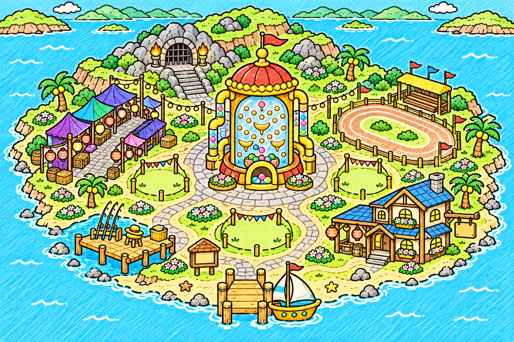
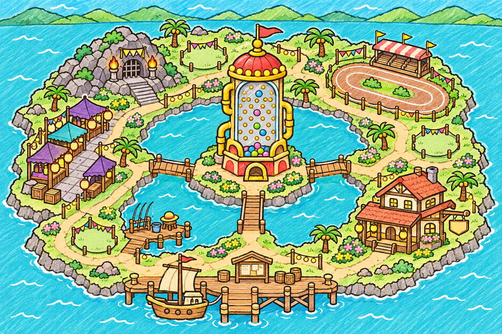
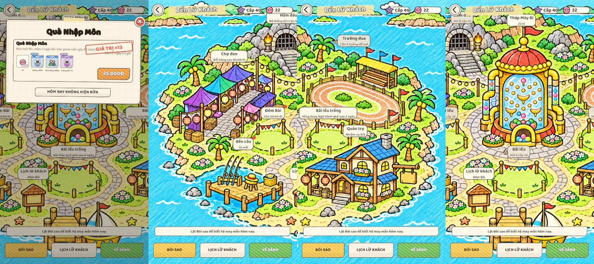
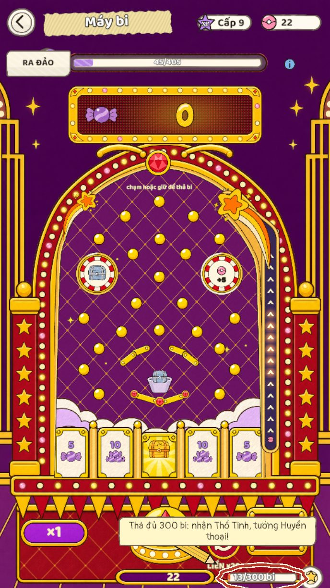

Đảo Casino "Bến Lữ Khách": chọn hướng concept
A. Quảng trường giữa đảo

B. Đảo vành khuyên quanh hồ

Màn đảo trong Unity (nền tạm là tờ A): giữa, kéo trái, kéo phải, cấp 9 nhiều trò còn khoá

Màn máy bi: nút "Ra đảo" góc trên trái
